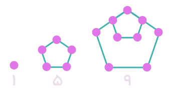

درس چهارم: دنبالههای حسابی و هندسی
دنباله های حسابی
در صفحات قبل، مثالهایی از الگوهای عددی ارائه شد. نام دیگر این گونه الگوهای عددی، دنبالههای حسابی است. به عبارت دیگر:
دنبالهای که در آن هر جمله (بهجز جمله اول) با اضافه شدن عددی ثابت به جمله قبل از خودش بدست میآید، یک دنبالههای حسابی نامیده میشود و به آن عدد ثابت، قدر نسبت دنباله میگویند.
فعالیت
سالهای برگزاری مسابقات المپیک از آغاز هزاره سوم میلادی، به صورت زیر است که جملات یک دنباله حسابیاند:
$$2000, 2004, 2008, 2012, 2016, 2020, \ldots $$
الف) جمله اول و قدر نسبت این دنباله را مشخص کنید: $$t_1 = \dots \, \ \ \ \, \ \ \ \ \, d = \dots$$
ب) نهمین دوره المپیک در این هزاره در چه سالی برگزار خواهد شد؟
پ) با تکمیل جدول زیر، جمله عمومی این دنباله را بدست آورید:
۲) با تکمیل جدول زیر، سعی کنید جمله عمومی یک دنباله حسابی را بدست آورید.
$$ t_{22} = \ldots $$
همانطور که مشاهده شد، جمله $a_n$ یک دنباله حسابی با جمله اول $t_1$ و قدر نسبت $d$ بهصورت $t_n = t_1 + (n-1)d$ است.
1-
در دنبالههای حسابی زیر با مشخص کردن قدر نسبت، سه جمله بعدی را بنویسید و سپس جمله عمومی هر کدام را بهدست آورید.
$
\text{ (الف) } 5, 10 , 15, 20, \{ \ \ \}, \{ \ \ \}, \{ \ \ \}, . . . , d = \{ \ \ \} \ \ \ \ , a_n = \{ \ \ \}
$
$
\text{ (ب) } 1, 3, 5, 7, \{ \ \ \}, \{ \ \ \}, \{ \ \ \}, . . . , d = \{ \ \ \} \ \ \ \ , b_n = \{ \ \ \}
$
$
\text{ (پ) } 5, 9, 13, 17, \{ \ \ \}, \{ \ \ \}, \{ \ \ \}, . . . , d = \{ \ \ \} \ \ \ \ , c_n = \{ \ \ \}
$
$
\text{ (ت) } 12, 7, 2, -5, \{ \ \ \}, \{ \ \ \}, \{ \ \ \}, . . . , d = \{ \ \ \} \ \ \ \ , d_n = \{ \ \ \}
$
سیم کارتهای شرکت A
هزینه ثابت ماهانه: 20000 تومان
هزینه هر دقیقه مکالمه: 30 تومان
سیم کارتهای شرکت B
هزینه ثابت ماهانه: 30000 تومان
هزینه هر دقیقه مکالمه: 20 تومان
فرض کنیم $a_n$ نشاندهنده هزینه $n$ دقیقه مکالمه ماهانه از طریق سیم کارت شرکت A و $b_n$ هزینه مشابه برای استفاده از سیم کارت شرکت B باشد.
(الف) مقدار $a_n$ و $b_n$ را بر حسب $n$ بنویسید.
(ب) جدول زیر را کامل کنید.
(پ) آیا $a_n$ و $b_n$ هر کدام میتوانند جمله عمومی یک دنباله حسابی باشند؟ چرا؟
اگر جواب مثبت است، قدر نسبت هر یک را مشخص کنید.
(ت) سارا در هر ماه حدود یک ساعت و فاصله ماهانه تقریبا 150 دقیقه با تلفن همراه مکالمه میکند. به هر یک از آنها کدام سیم کارت را پیشنهاد میکنید؟ چرا؟
در دنبالة حسابی زیر جمله شانزدهم را بهدست آورید.
$$4, 11, 18, 25, \ldots$$
حل: آرتین و آرکان این مثال را به روشهای زیر حل کردهاند. شما کدام روش را میپسندید؟
آرتین: از جمله عمومی دنبالة حسابی استفاده میکنیم:
$$ \begin{align*} t_n & = t_1 + (n-1) \cdot d \\ t_{16} & = 4 + (15)(7) \\ & = 109 \end{align*} $$
آرکان: یک الگوی خطی با قدر نسبت 7 داریم. پس:
$$ \begin{align*} t_n & = 7n + b \\ \\ t_1 & = 7(1) + b \\ \\ 4 & = 7 + b \\ \\ \Rightarrow b & = -3 \\ \\ \\ t_n & = 7n - 3 \ \ \Leftarrow \text{جمله عمومی} \\ \\ t_{16} & = 7(16) - 3 \\ \\ t_{16} & = 109 \end{align*} $$
۱)
(الف) یک دنباله حسابی با قدر نسبت مثبت مثال بزنید که جمله چهارم آن ۱۰ باشد.
(ب) یک دنباله حسابی با قدر نسبت منفی مثال بزنید که جمله چهارم آن ۱۰ باشد.
(پ) دنبالهای حسابی مثال بزنید که تنها سه جمله مثبت داشته باشد و سایر جملات آن منفی باشند.
۲)
(الف) بین ۱۸ و ۶۲ سه عدد را چنان قرار دهید که پنج عدد حاصل تشکیل دنباله حسابی بدهند. در این حالت میگوییم بین ۱۸ و ۶۲ سه واسطة حسابی درج کردهایم.
حل: با فرض اینکه ۱۸ جمله اول باشد، قدر نسبت را بهدست آورید و جدول را کامل کنید.
\[ \left\{ \begin{array}{l} t_1 = 18 \\ t_5 = 62 \quad \Rightarrow \quad t_1 + 4d = 62 \quad \Rightarrow \quad d = \ldots \end{array} \right. \]
| $t_1$ | $t_5$ | |||
|---|---|---|---|---|
| 18 | 62 |
(ب) بین ۲۰ و ۸۰ به تعداد مشخص شده در هر مورد واسطة حسابی درج کنید.
۱) از بین دنبالههای زیر، دنبالههای حسابی را مشخص کنید و در هر یک از آنها با تعیین قدرنسبت، جمله بیستویکم را بیابید.
(الف)$ ۳، ۱۰، ۱۷، ۲۴، \ldots$
(ب) $1, 2 , 4 , 8, \ldots$
(پ) $ \sqrt{3}, 2 \sqrt{3}, 3 \sqrt{3}, 4 \sqrt{3} \ldots$
(ت)$ 10, 7, 4, 1, \ldots $
(ث) $\frac{۲}{۵}, \frac{۳}{۵}, ۱, \ldots$
(ج) $ 2, 2, 2, 2, \ldots$
۲) در یک دنبالة حسابی، جملات سوم و هفتم بهترتیب ۲۰ و ۵۶ است. دنباله را مشخص کنید؛ یعنی بادستآوردن جمله اول و قدرنسبت، جملات دنباله را بنویسید.
۳) در یک دنبالة حسابی، مجموع سه جمله اول ۳ و مجموع سه جمله بعدی آن ۳۹ است. دنباله را مشخص کنید.
۴) دو جمله بعدی الگوی مقابل را با رسم شکل بیابید و نوع دنباله را مشخص کنید.

(الف) جمله عمومی آن را مشخص کنید.
(ب) جمله چندم این دنباله ۳۹۷ است؟
۵) (الف) واسطه حسابی بین ۵ و ۱۱ چه عددی است؟
(ب) واسطه حسابی بین ۲۰ و ۳۰ چه عددی است؟
(پ) از دو قسمت قبل چه نتیجهای میگیرید؟
۶) مسأله زیر در پاپیروس رایند آمده است. آن را حل کنید.
«۱۰۰ قرص نان را بین ۵ مرد چنان تقسیم کنید که سهمهای دریافت شده، دنباله حسابی تشکیل دهند و یک سهم مجموع دو سهم بزرگتر، مساوی مجموع دو سهم کوچکتر باشد.»
قدیمیترین کتاب ریاضی جهان
تاریخ تقریبی پاپیروس رایند (یا احمس) سال ۱۶۵۰ قبل از میلاد است. این پاپیروس یک متن ریاضی میباشد که تا حدودی ماهیت یک کتاب راهنما را دارد و شامل ۸۵ مسأله به خط هیراتی میباشد. احمس کاتب آن را از روی یک اثر قدیمیتری نسخهبرداری کرده است. این پاپیروس در سال ۱۸۵۸ میلادی، بوسیله مصرشناس اسکاتلندی، هنری رایند، در مصر خریداری شد و سپس به موزه بریتانیا منتقل شد. پاپیروسهای رایند (۱۶۵۰ ق.م) و مسکو (۱۸۵۰ ق.م) از منابع اصلی اطلاعات ما دربارۀ ریاضیات مصر باستان هستند. پاپیروس رایند در سال ۱۹۲۷ منتشر شد. این پاپیروس حدود ۵/۵ متر طول و ۳۰ سانتیمتر عرض دارد.
دنباله هندسی
علی به بیماری آنفولانزا مبتلا شده است. روز شنبه چند تن از دوستانش بدون آنکه ماسک زده باشند، به عبادت او آمدند. در این زمان ویروس آنفولانزا از راه تنفس وارد بدن امید و محسن میشود. چرا که آنها روز یکشنبه مبتلا به این بیماری شدند. اگر پیشگیری انجام نشود و موارد بهداشتی مراعات نگردد، پیشبینی میشود که انتشار ویروس با مدتی با همین الگو ادامه یابد؛ یعنی امید و محسن در روز اول بیماری خود، هر کدام ویروس را به ۴ نفر دیگر منتقل کنند؛ بهطوری که روز دوشنبه ۴ نفر جدید از طریق آنها مبتلا شوند و این روند ادامه پیدا کند.
۱) جدول مقابل را کامل کنید و $t_n$ را بیابید.
| روز : $n$ | $t_n$: تعداد افراد جدیدی که در روز $n$ ام مبتلا میشوند |
|---|---|
| $۱$ | $2$ (امید و محسن) |
| $2$ | $2 \times 2 = 2^2$ |
| $۳$ | $4 \times 2 = 2^3$ |
| $۴$ | $8 \times 2 = \ldots$ |
| $۵$ | $...$ |
| $۶$ | $...$ |
| $ . \\ . \\ . $ | $ . \\ . \\ . $ |
| $n$ | $t_n = \ldots$ |
۲) در روز دهم چند فرد جدید مبتلا میشوند؟
۳) در روز یازدهم چند شخص جدید به این بیماری مبتلا میشوند؟
۴) در روز چندم تعداد افراد جدیدی که به بیماری آنفولانزا مبتلا میشوند، برابر ۱۶۳۸۴ نفر میشود؟
در مثال بالا میتوانیم تعداد مبتلایان جدید هر روز را بهصورت دنباله زیر بنویسیم:
$$ 2, 4, 8, 16, 32, 64, \ldots $$
این دنباله یک دنباله حسابی نیست؛ چرا که تفاضل جملات متوالی آن ثابت نیست، بلکه نسبت تقسیم هر دو جمله متوالی آن برابر عددی ثابت است.
$$ \frac{4}{2} = \frac{8}{4} = \frac{16}{8} = \frac{32}{16} = \ldots = 2 $$
اینگونه دنبالهها را دنبالههای هندسی مینامیم. یعنی:
دنبالهٔ هندسی، دنبالهای است که در آن هر جمله (بهجز جملهٔ اول) از ضرب جملهٔ قبل از خودش در عددی ثابت و غیرصفر بهدست میآید. این عدد ثابت را قدرنسبت دنباله مینامیم. جملهٔ اول هم باید غیرصفر باشد.
در حالت کلی در یک دنباله هندسی، اگر جمله اول $t_1$ و قدرنسبت $r$ باشد، جملات آن به شکل زیر خواهند بود. جدول را تکمیل کنید.
با دقت در الگوی بهکار رفته در جملات بالا دیده میشود که:
جمله $n$ ام دنباله هندسی بهصورت $ t_n = t_1 r^{n-1} $ است که در آن $t_1$ جمله اول و $r$ قدرنسبت میباشد $(t_1 \neq 0, r \neq 0)$.
۱) نرگس و نگار برای محاسبهٔ هفتمین جملهٔ دنبالهٔ هندسی $9,3,1, \ldots$ از دو روش مختلف استفاده کردهاند. کدام یک از آنها این مثال را درست حل کردهاند؟ توضیح دهید.
۳) (الف) اگر بین ۳ و ۴۸، عدد ۱۲ را قرار دهیم، سه عدد حاصل دنباله هندسی میدهند. در این حالت میگوییم ۱۲ یک واسطة هندسی بین ۳ و ۴۸ است. برای این کار بهجز ۱۲ چه عدد دیگری را میتوان درنظر گرفت؟
\[ \left\{ \begin{array}{l} t_1 = 3 \\ t_2 = 12 \\ t_3 = 48 \quad \Rightarrow \quad t_1 \times r^2 = 48 \quad \Rightarrow \quad r = \ldots \end{array} \right. \]
| ۳ | ۴۸ |
(ب) بین ۳ و ۴۸ سه واسطۀ هندسی درج کنید. آیا جواب یکتاست؟
| ۳ | ۴۸ |
(پ) جاهای خالی را طوری پر کنید که در هر مورد یک دنباله هندسی حاصل شود.
| 10 | 4000 |
| 10 | 80000 |
| 4 | 972 |
۱) از بین موارد زیر، دنبالههای هندسی را مشخص کنید و قدر نسبت آنها را بنویسید.
(الف) $ 7,28,112,448, \ldots $
(ب) $ 2 \sqrt{5},4 \sqrt{5}, 6 \sqrt{5}, 8 \sqrt{5}\ldots $
(پ) $ 1, \frac{-1}{2}, \frac{-1}{4}, \frac{-1}{8}$
(ت) $ 1, \frac{-1}{2}, \frac{-1}{4}, \frac{-1}{8}$
۲) چند دنباله هندسی با قدر نسبت $ \frac{4}{5} $ میتوان ساخت؟ دو مورد را بنویسید.
۳) درستی یا نادرستی جملات زیر را بررسی کنید. در صورت درست بودن توضیح دهید و در صورت نادرست بودن مثال نقض ارائه کنید.
(الف) هر دنبالهای با حسابی است یا هندسی.
(ب) دنبالهای وجود ندارد که هم حسابی باشد، هم هندسی.
۴) یک دوچرخهای را به قیمت ۵۰۰ هزار تومان خرید. فرض کنید قیمت دوچرخه دست دوم، در هر سال ۲۰ درصد نسبت به سال قبل از خودش کاهش یابد.
حاصلضرب بیست جملهٔ اول دنبالهٔ هندسی مقابل را محاسبه کنید: $$2, 4, 8, \ldots$$
(الف) اگر او بعد از ۳ سال صفر کردن دوچرخهای را داشته باشد، چه قیمتی میتواند آن را بفروشد؟ قیمت دوچرخه بعد از گذشت هر سال چه رابطهای بهدست میآید؟
6) جملات سوم و ششم یک دنباله هندسی به ترتیب ۱۲ و ۹۶ هستند. دنباله را مشخص کنید.
بنابر آمار منتشر شده از جانب پزشکی قانونی کشور، آمار تلفات جادهای از عدد ۲۷۷۵۹ نفر در سال ۱۳۸۴ به عدد ۱۶۷۷۸ نفر در سال ۱۴۰۰ کاهش یافته است که نشاندهندهٔ حدود ۳ درصد کاهش سالانه در این دهههاست. اگر آمار حوادث رانندگی در کشور با همین سرعت کاهش یابد،
(الف) پیشبینی میشود در هر یک از سالهای منتهی به سال ۱۴۰۵ چند نفر از هموطنهای ما جان خود را در حوادث رانندگی از دست بدهند؟ نتایج را در جدول زیر ثبت کنید.
| سال | ۱۴۰۰ | ۱۴۰۱ | ۱۴۰۲ | ۱۴۰۳ | ۱۴۰۴ | ۱۴۰۵ |
|---|---|---|---|---|---|---|
| تعداد تلفات مورد انتظار |
(ب) اعداد حاصل، چه نوع دنبالهای تشکیل میدهند؟